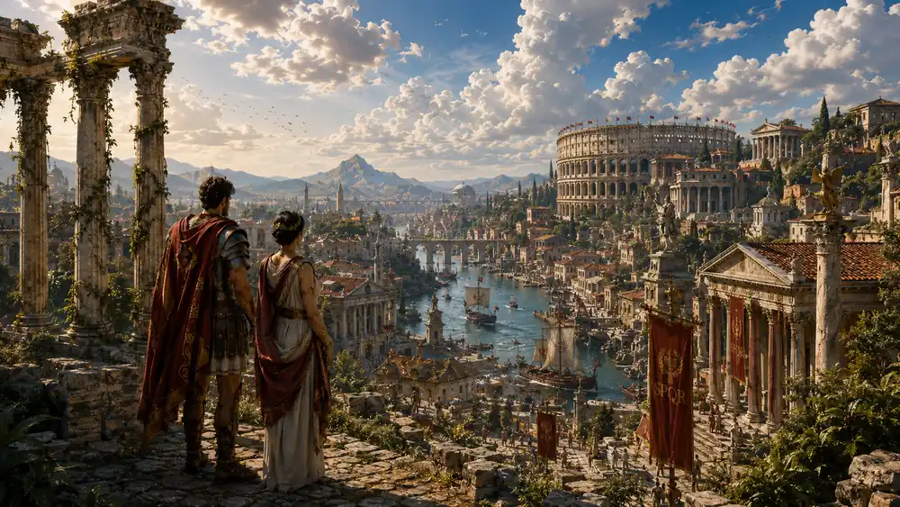
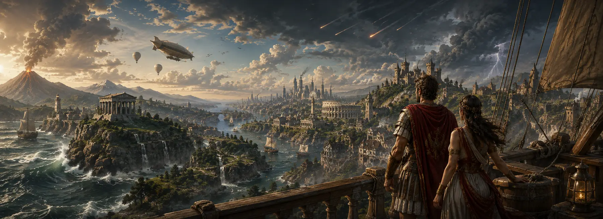

On ne révise pas.
On ne révise pas.
On apprend en jouant.
MindOdyssey est le jeu vidéo d'aventure des 7-12 ans. Votre enfant y traverse l'Histoire jusqu'à aujourd'hui en résolvant de vrais problèmes.
Un court formulaire, pour être parmi les premiers à essayer le jeu.
- 7-12 ans · CE1 à la 6ᵉ
- Sans publicité
- Sans cookie ni traceur
- Sans chat avec des inconnus
- Sans achat déclenchable par l'enfant
- Notions scolaires du CE1 à la 6ᵉ
- Missions construites à partir de plus de 70 sources vérifiées

Le village, au premier jourIci, la Préhistoire : son décor change à chaque époque qu'il traverse.
Le point de départ
Il apprend pour résoudre un problème
Au village, certaines choses ne s'expliquent pas. Des objets apparaissent sans que personne ne sache d'où ils viennent. Une roue de bois tourne sans rien entraîner. Deux balances, pour le même sac, donnent deux résultats différents.
Pour comprendre, l'enfant doit remonter le temps. Une fois arrivé dans une époque, il rencontre ses habitants, découvre leurs problèmes et cherche une solution. Il calcule la capacité d'un grenier, répartit l'eau d'un canal, compare des témoignages ou comprend le fonctionnement d'une machine.
Il fait des mathématiques pour calculer la capacité d'un grenier, pas pour un exercice.
Chaque mission s'appuie sur des sources historiques et pédagogiques vérifiées : c'est ce qui la rend crédible, pas seulement amusante.

On ne visite pas un décor : on comprend pourquoi les choses ont été inventées.
Le rythme
Huit façons de jouer, pas une
Un enfant qui enchaîne les missions au déroulé identique voit le motif et décroche. Chaque mission déclare donc l'un de huit archétypes, avec sa propre entrée et sa propre fin : deux missions voisines d'un même monde ne partagent jamais le même.
I
Enquête
La mission contient une piste séduisante et fausse. Sans elle, ce n'est pas une enquête, c'est une collecte.
II
Chantier
Le terrain contredit le plan. Le plan est juste sur le papier et inapplicable tel quel.
III
Service sous pression
Un moment où l'on ne peut pas tout faire. Ce moment est le sujet de la mission, pas un accident.
IV
Expérimentation libre
On demande de prédire avant de vérifier. C'est le seul archétype où l'action précède l'objectif.
V
Débat
Il n'y a pas de solution qui contente tout le monde. Si elle existe, ce n'est pas un débat.
VI
Création
Aucune bonne réponse unique. Le retour vient d'un regard extérieur, pas d'une grille.
VII
Exploration
Le retour ne peut pas emprunter le chemin de l'aller. C'est ce qui transforme la balade en orientation.
VIII
Réparation
C'est le débogage. Applicable au code comme au moulin, à l'aqueduc comme à la presse d'imprimerie.
Les mondes
Dix mondes. Cinq grandes périodes.
Le jeu montre à quel besoin chaque invention répondait, et ce qu'elle ne savait pas faire. Un moulin à eau convertit un courant en mouvement : ça n'a jamais cessé d'être vrai.
- Monde 1Préhistoirejusqu'à ≈ −3300
Le feu s'éteint chaque nuit, et il faut savoir pourquoi.
- Mondes 2 et 3Antiquité≈ −3300 à 476
Dompter les crues du Nil, découvrir l'écriture et acheminer l'eau jusqu'aux villes.
- Mondes 4 et 5Moyen Âge476 à 1492
Un pont de pierre tient sans clou ni ciment : la voûte fait tout le travail.
- Mondes 6 et 7Temps modernes1492 à 1789
Suivre la circulation des idées, comprendre l'imprimerie et explorer de nouveaux territoires.
- Mondes 8, 9 et 10Époque contemporaine1789 à aujourd'hui
Écrire des doléances, ouvrir une école, reconstruire un quartier et découvrir comment l'information est devenue numérique.
Voir les dix mondes et leurs époques
- 1Préhistoiredes premiers humains à ≈ −3300des premiers humains à ≈ −3300
- 2Premières civilisations≈ −3300 à −500≈ −3300 à −500
- 3Grèce, Gaule et Rome≈ −500 à 476≈ −500 à 476
- 4Clovis, Charlemagne et Vikings476 à ≈ 1000476 à ≈ 1000
- 5Châteaux, villes et cathédrales≈ 1000 à 1492≈ 1000 à 1492
- 6Renaissance, imprimerie et ouverture atlantique1492 à ≈ 16001492 à ≈ 1600
- 7Rois, Versailles et Lumières≈ 1600 à 1789≈ 1600 à 1789
- 8Révolution, République et XIXᵉ siècle1789 à 19141789 à 1914
- 9Guerres mondiales, reconstruction et Europe1914 à 19911914 à 1991
- 10L'âge de l'informationthématique · ≈ 1830 à aujourd'huithématique · ≈ 1830 à aujourd'hui
Chaque mission cite ses sources (parmi lesquelles la BnF, l'Inrap, le musée des Arts et Métiers, le château de Versailles et l'Observatoire de Paris). Quand une source ne permet pas d'affirmer quelque chose, le jeu ne l'affirme pas.
Les illustrations, animées ou non, sont des vues d'artiste. Elles donnent l'atmosphère d'une période, mais ne sont pas des reconstitutions documentaires.
Les apprentissages
Les connaissances font avancer le récit
Chaque mission fait appel à des notions scolaires du CE1 à la 6ᵉ.
Les activités sont intégrées aux situations rencontrées dans le jeu. Calculer une surface permet de dimensionner un grenier. Utiliser la proportionnalité aide à répartir l'eau. Comparer deux documents permet de comprendre pourquoi ils ne racontent pas exactement la même chose.
Le niveau se règle séparément pour chaque domaine.
Les missions mobilisent
- Mathématiques
- Français
- Histoire et géographie
- Sciences et technologie
- Enseignement moral et civique
- Pensée informatique
Le jeu ne couvre pas toutes les matières de l'école : ces domaines sont ceux que les missions font travailler.
Il n'y a ni note ni classement ni pourcentage de réussite. La progression se voit directement dans le village et dans ce que l'enfant y rapporte.
Les Justes Mesures
Monde 5 · Une foire médiévale
Deux marchands pèsent le même sac, mais leurs balances n'indiquent pas le même poids.
Personne ne dit à l'enfant qui a raison. Il doit peser, comparer et chercher l'origine de l'écart. À la fin de la mission, il rapporte au village un poids public et doit défendre la marge d'erreur qu'il a retenue.
S'il se trompe, l'aventure ne s'arrête pas. Le village conserve une première version de l'objet, qu'il pourra améliorer en revenant plus tard.
Monde 5 · châteaux, villes et cathédralesUne foire, deux balances, et personne pour dire qui a raison.
Pour les parents
Ce que vous réglez, et ce que le jeu ne fera jamais
MindOdyssey propose un espace de jeu sans pression artificielle ni comparaison entre enfants. Un pseudonyme suffit pour jouer.
Ce que le jeu ne fera jamais
Aucun classement entre enfants.
Aucun chat avec des inconnus.
Aucune vie à recharger.
Aucun prénom réel ni date de naissance demandés.
Vous voyez ce que votre enfant a travaillé, sans transformer son aventure en bulletin de notes.
MindOdyssey ne remplace ni l'école ni l'accompagnement d'un adulte. Il offre un nouvel espace pour réutiliser des connaissances dans des situations concrètes et ludiques.
Un enseignant retrouve les mêmes réglages pour sa classe : un niveau par élève et par domaine, sans note ni classement transmis. Le jeu ne demande jamais le nom d'un élève, et aucune donnée d'un profil n'est visible par un autre.
Ce que vous réglez, vous
Vous créez les profils, réglez le temps de jeu et consultez ce que votre enfant a rencontré dans le jeu. Le code n'est pas connu de l'enfant.

Le village attend
Un mot pour les parents, les enseignants et tous ceux qui accompagnent un enfant
MindOdyssey est actuellement en développement. Inscrivez-vous pour recevoir un message lorsqu'une version du jeu sera prête à être essayée.
Pas de lettre d'information. Pas de relance. Un seul message, au bon moment.
Inscrivez-vous pour tester la bêta.
Un court formulaire suffit. Nous vous prévenons quand une version du jeu sera prête à être essayée.
Votre adresse ne sera ni vendue ni transmise ni utilisée à d'autres fins. Elle sert à un seul message, celui du lancement, et est supprimée dès qu'il est envoyé ; vous pouvez aussi en demander la suppression avant. Cette page ne pose aucun cookie et n'appelle aucun service tiers au chargement.